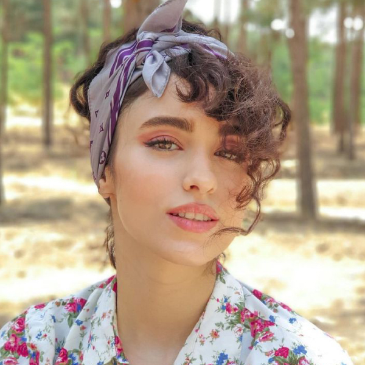
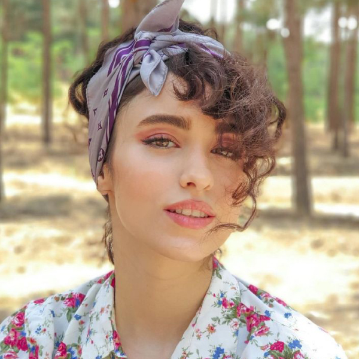

ما لحظه ها را ثبت می کنیم
ما در انجماد آن لحظات زودگذر در زمان تخصص داریم که برای شما اهمیت زیادی دارد با اشتیاق ما به عکاسی و با دقت به جزئیات، لحظات معمولی را تبدیل به لحظات می کنیم خاطرات خارق العاده
خواه یک رویداد مهم، یک پرتره صریح، یا نفس گیر باشد زیبایی طبیعت، ما در تلاش هستیم تا جوهر هر لحظه را در بر بگیریم، اطمینان حاصل کنید که خاطرات گرامی شما یک عمر باقی می ماند. به ما اعتماد کن جادوی سفر زندگی خود را در یک فریم به تصویر بکشید.


 
